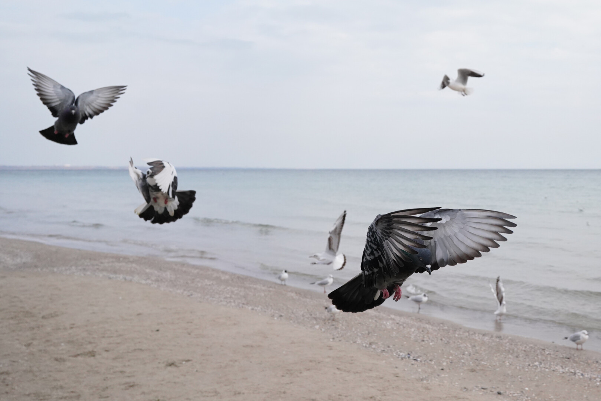
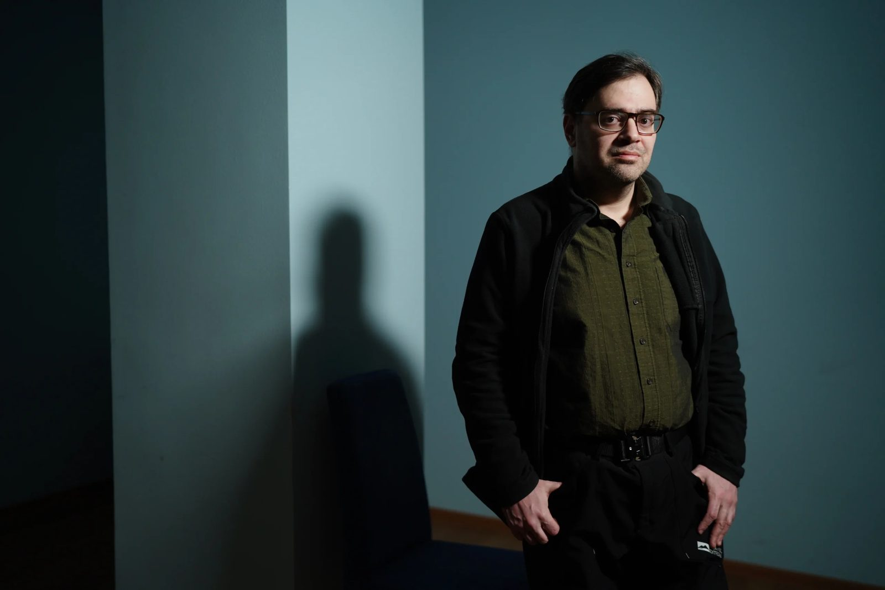
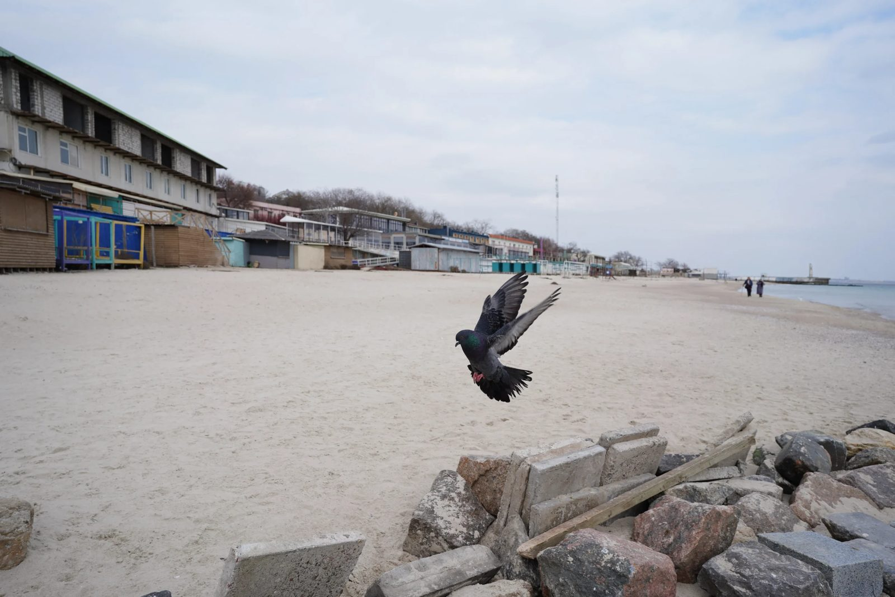
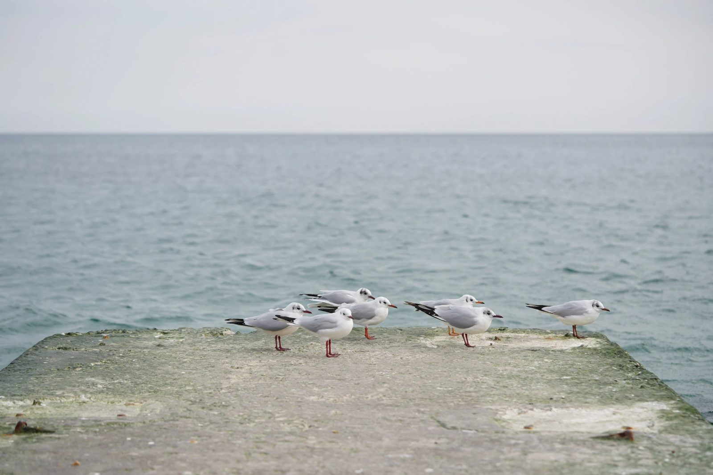
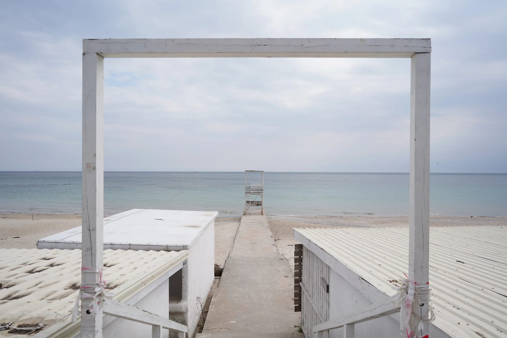
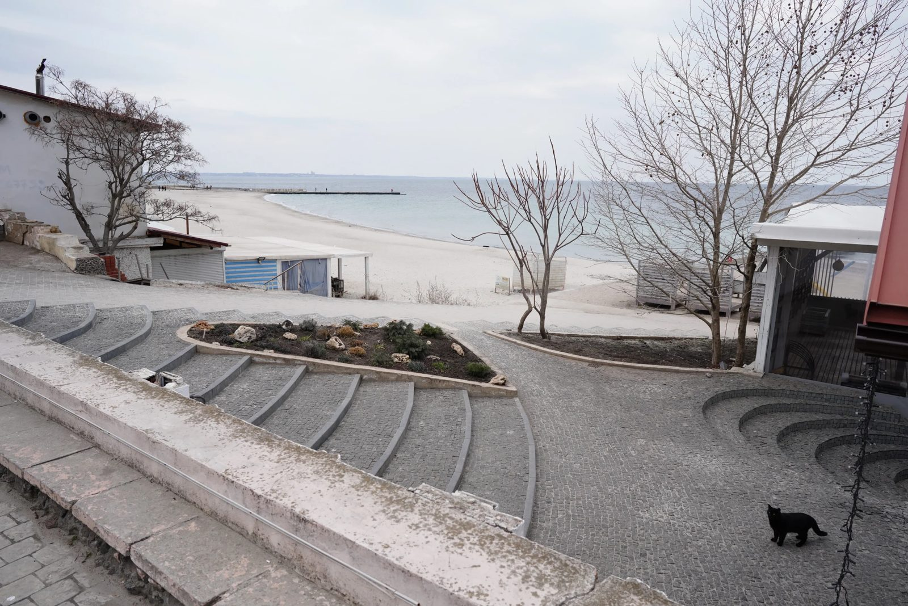
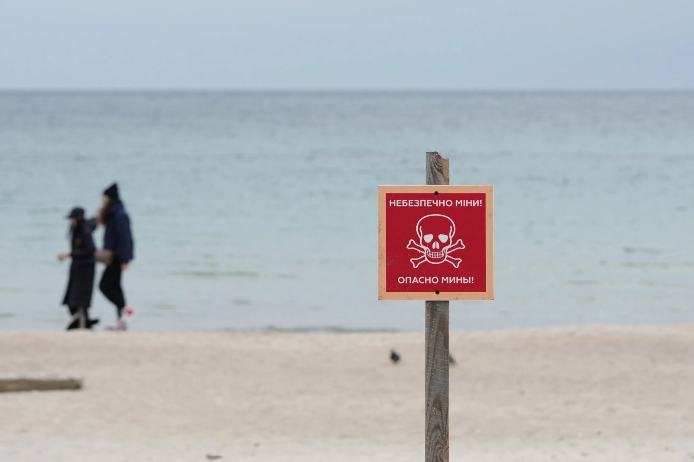
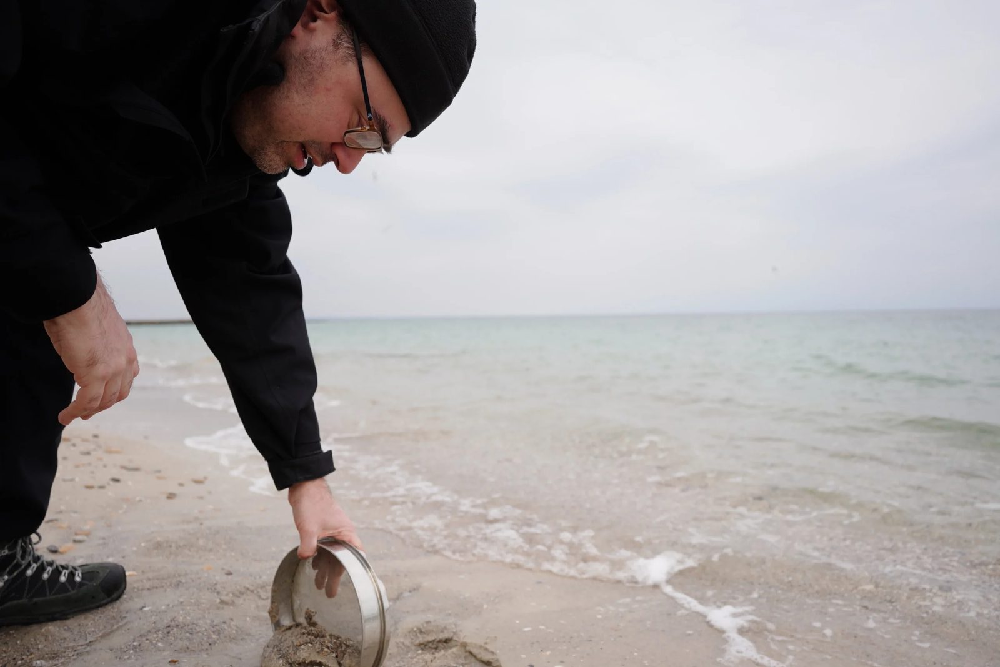
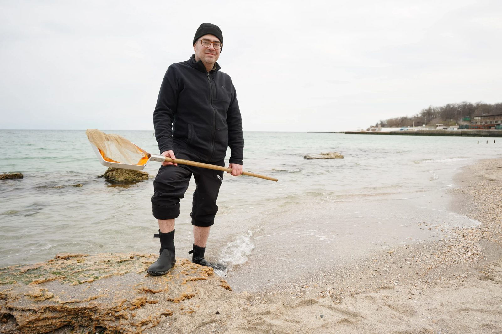
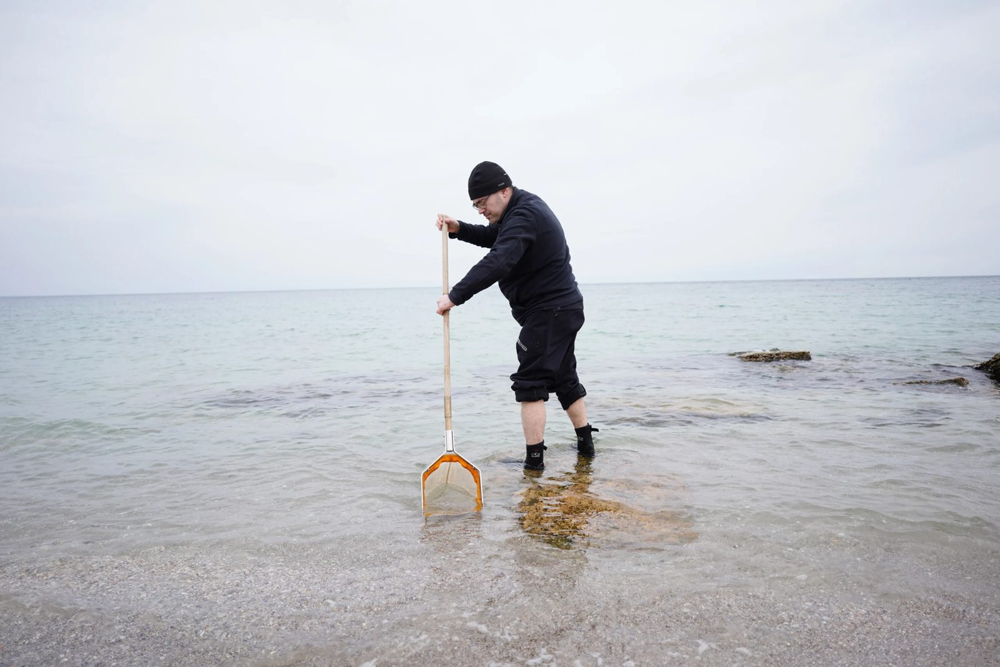

War and the sea
25.04.23
In 2022, the Ukrainian South became a theater of active warfare. This, in its turn, couldn’t pass without leaving a mark on ecology, as Russians fight dirtily, not sparing shells and pressuring with numbers instead of accuracy. The war is still being fought, and part of the Ukrainian South is still under occupation, but scientists try to keep their finger on the pulse. Kunsht has visited Mykhailo Son, a Doctor of Biology, and a leading scientist at The Institute of Marine Biology of NASU in Odesa.
Three years ago, the Institute lived through a horrible fire that took the lives of the Institute employees, valuable collections, and scientific materials. Nowadays, the institute is scattered around the city. Mr. Mykhailo has agreed to meet us in the administrative building.

Our conversation began with a general evaluation of the situation. The scientist marked that war is a double-edged sword. On one hand, ecology suffers from battles, sunk ships, artillery shells, and destroyed industrial facilities. But on the other hand, because of the limits on fishing, mining, paralyzed tourism, and construction on the coast, the sea has a chance for revival, especially in those coastal areas where there are no active battles.

An analysis of the consequences of war on the marine ecosystem is complicated by many factors. First, it’s impossible to evaluate the situation in the occupied territories. And the Azov Sea is occupied as a whole. It’s hard to know what consequences the ruining of the industrial Mariupol and coastal Azovstal has led to. Second, in the territories under Ukrainian control, a lot of zones are controlled by the military, and there are many mine barriers, so the research isn’t currently done there. Last year, the Institute of Marine Biology was able to do research only in the delta of the Danube, northern parts of the estuaries (Tylihulsky, Sukhy, Kuyalnytsky, Hryhoriivsky), and a small part of the sea near the mouth of the Danube that was opened for fishing. Third, during the war, both national and international ecological institutions are weakened, and monitoring and research get interrupted. Ukraine was planning to inaugurate complex monitoring of the marine ecosystem in 2022, under the efforts for Eurointegration. The research should have been done by Borys Aleksandrov, a ship gifted to Ukraine by Belgium, but its launch was postponed because of the war. Fourth, the analysis of the ecological situation has to be done with a complex analysis of all the sources, including the Russian ones, and they are impossible to take into consideration now, given that when Russia gives data on “Russian Black Sea territory” in its reports, this includes the occupied territories. Because of this confusion, the International Black Sea Commission (which includes all the countries on the coast of the Black Sea) cannot work correctly.
All these factors complicate the analysis a lot, but the scientists try out alternative methods of research – for instance, using satellite imagery to evaluate the extent of sea pollution because of war based on the color of the water.

The marine environment differs in that it’s not as mosaic as the land one. This means that in the mountains, forests, and lakes small habitats with unique species that are easy to destroy are much more common. The sea has very vast monotonous stretches. If a part of some habitat is damaged it will renew soon. But the marine ecosystem is also vulnerable, especially in the lagoons, estuaries, bays, and coastal areas. In the depth of the Black Sea, there are unique fields with the Phyllophora algae that create landscapes with valuable biota. “Such vast zones of continuous algal biocoenoses outside of the tidal zone of the coast are unique. The Sargasso Sea can be considered an analog of such an ecosystem. Such vast clusters of Phyllophora and corresponding groups of animals that colonize them don’t exist anywhere else in the world,” – Mr. Mykhailo explains. Last year's hostilities were a direct threat to them.

Zmiiny Isle is one more victim of this war. The battles for it were rather intensive as it was the key to the opening of the grain corridor. Once, it could boast of unique rocks with peculiar biota that differed from Crimea and the Odesa region. *Any islands form unique ecosystems due to their isolation from the continent. This uniqueness may also stem from the paucity of their biota. Then, the biodiversity is lower and there are species that take the niches of others. If the island is big, this triggers evolution with formation of new species. Zmiiny has landscapes of “hard” rocks (metamorphic rocks), and due to this its biological formations resemble those characteristic to the Crimean rocks in their function. Nonetheless, it is situated in the zone of lower salinity (like all the north-west parts of the Black Sea), and many of the species characteristic of Crimea are absent here. In consequence, a specific group is formed that differs from others, for example, by high numbers of the warty crab and the marbled rock crab and a presence of marine lichens. Part of the rocks is physically destroyed. The birds also used Zmiiny to rest, especially those that don’t use to visit the continent. Currently, scientists can’t evaluate the scale of the damage to the island’s ecosystem, as all the monitoring and research missions on it are stopped. Before the invasion, a biological station of the university was functioning there (it researched the spread of viruses in birds among other things), and the employees of the Institute of Marine Biology use to visit the island.
The topic of the anomalously high death rate among dolphins and porpoises in the Black Sea has probably become most known to the public. Ecologists hypothesize that active combat is a possible reason for this, as the animals react to underwater waves, sounds of explosions, and the work of sonars. Mr. Mykhailo notes that the topic needs verified scientific research, and, fortunately, it is happening. It’s one of the few instances when scientists were allowed to do research for a criminal investigation. The scientists from the Institute of Zoology of NASU took samples of different brain tissues of the animals. The molecular samples are currently being researched in Europe.
One more ecologically vulnerable habitat is Kakhovka Reservoir; Russians barbarously drop big amounts of water from it. This may damage the ecosystem of the Reservoir itself, bringing disbalance to its hydrological and oxygen regime, and the lower area of Dnipro under the dam, including its delta, can become a victim of flooding, which brings the risks of polluting the water with trash and industrial waste.
Mr. Mykhailo dreams that, after the war, it will be possible to launch the sea monitoring system, which will give accurate and full data, and the institute will be able to use them for its specialized research.

Mr. Mykhailo answers the question of what is needed to evaluate the consequences of war for ecosystems like this: “First of all, of course, we need access to the sea, and we also need funding for the expeditions and equipment. At the current stage, we can use new scientific methods that aren’t yet practiced in Ukraine, for example, genetic research that can show a short-term impact on an organism. **Such an indicator for pollution may be, for example, transcriptomics – an analysis of the totality of the RNA that is formed in a cell based on the genetic code in DNA. This shows, for instance, differences in expression of genes connected to immunity. Other possible analyses are an analysis of the proteins characteristic of stress, an analysis of the number of mutations, including chromosome abnormalities, incorrect work of the mitosis mechanism and abnormalities in the structure of the cell membranes. This may show if the organism is under stress, or whether there are influences of toxic chemicals and so on.”

After our conversation, we went to the beach in Odesa – that part of it where you can go without a military convoy. Public utility workers approached us and warned us that a mine could be washed on the shore. They let us stay but asked us to be careful. Passers-by from Odesa couldn’t miss an opportunity for a joke and told us to bring all the mines to their scrap metal collecting spot.

In a couple of hours, Mr. Mykhailo, having solved all his work issues, was able to join us with his research equipment. On the beach, he dug some sand looking for a Donacilla mollusk. They didn’t come all the way to Odesa shores as the tourists accidentally destroyed them, but after a dead tourism season, the researchers started to find specimens of this species on the beaches of the city.
We weren’t lucky enough to find a Donacilla, but Mr. Mykhailo found Zostera sea grass washed on the shore nearby that used to be rare on the city beaches for decades.

In a pile of seashells, Mr. Mykhailo picked up those of Black Sea oysters. An invasive species of Rapana has almost destroyed this species.
One of the versions says that Rapanas appeared in the Black Sea at the end of the 1940s because of WWII. First, Japan had contact with Italy, and its fleet brought Rapana from the Japanese to the Adriatic Sea. And then, when the USSR took a part of the Italian fleet as reparations, they brought this carnivorous mollusk with it, which had a big impact on the ecosystem of the Black Sea.

Mr. Mykhailo mentions the Crimean War, where the cavalry had an important role, in this context. Forage and hay for the horses were brought there from all over Europe, and this way a whole number of new plants appeared in Crimea.
The current war also brings great risks of the appearance of invasive species. Russians bring warships from the Baltic and Caspian Seas to the Black Sea. Russian oil is being transported by new routes under the sanctions. It may be, that one of the consequences of the full-scale Russian invasion will be a vast-scale appearance of new invasive species in our ecosystems.
This report has been developed within the project supported by the Public Affairs Section of the U.S. Embassy in Ukraine. The views of the authors do not necessarily reflect the official position of the U.S. government.